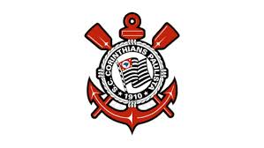

1910 A fundação Às 20h30 do dia 1º de setembro, à luz de um lampião, na esquina das ruas José Paulino e Cônego Martins, no bairro do Bom Retiro, o grupo de operários formado por Anselmo Corrêa, Antônio Pereira, Carlos Silva, Joaquim Ambrósio e Raphael Perrone fundaram o Sport Club Corinthians Paulista. Com mais oito rapazes, foi formada a reunião dos primeiros integrantes e sócio-fundadores do Timão, que teve seu nome inspirado na equipe inglesa Corinthian-Casuals Football Club, que fazia excursão pelo Brasil. O presidente escolhido por eles foi o alfaiate Miguel Battaglia, que, já no primeiro momento, afirmou: “O Corinthians vai ser o time do povo e o povo é quem vai fazer o time”. Um terreno alugado na Rua José Paulino foi aplainado, virou campo e foi lá que, já no dia 14 de setembro, o primeiro treino foi realizado diante de uma plateia entusiasmada, que garantiu: “Este veio para ficar!”.
Embora tenha atuado em outras modalidades esportivas ao longo dos anos, seu reconhecimento e suas principais conquistas foram alcançados no futebol.[4] O clube é um dos mais bem sucedidos do Brasil e das Américas nos últimos anos.[5] É o terceiro maior campeão nacional, com onze conquistas, ficando atrás somente do Palmeiras (17 conquistas) e Flamengo (14 conquistas). Conquistou dois Mundiais de Clubes da FIFA,[6] uma Copa Libertadores da América de forma invicta, uma Recopa Sul-Americana, sete Campeonatos Brasileiros,[7] três Copas do Brasil,[8] uma Supercopa do Brasil, cinco Torneios Rio-São Paulo (recordista, ao lado de Palmeiras e Santos), 30 Campeonatos Paulistas (atual recordista) e uma Copa Bandeirantes (único vencedor).
Com o título brasileiro de 1998, o Corinthians foi o representante do país-sede no primeiro Campeonato Mundial de Clubes, promovido pela Fifa. O torneio foi disputado nas cidades de São Paulo e do Rio de Janeiro em janeiro de 2000. Na partida inicial, o Timão venceu o Raja Casablanca (MAR) por 2 a 0 com gols de Luizão e Fábio Luciano. Dois dias depois, o Alvinegro empatou em 2 a 2 com o Real Madrid (ESP). Edílson marcou os tentos do duelo, que ainda contou com uma defesa de pênalti de Dida no chute de Anelka.
Após o empate em 1 a 1 em Buenos Aires no primeiro jogo da final, o Coringão venceu o Boca Juniors (ARG), no Pacaembu, com dois gols do atacante Emerson no dia 04 de julho e fez o Bando de Loucos soltar o grito de campeão da Libertadores pela primeira vez na história. A escalação da última partida foi: Cássio, Alessandro, Chicão, Leandro Castán e Fábio Santos; Ralf, Paulinho, Danilo e Alex; Jorge Henrique e Emerson.
7 Campeonatos Brasileiros - 1990, 1998, 1999, 2005, 2011, 2015 e 2017
3 Copas do Brasil - 1995, 2002 e 2009
1 Campeonato Brasileiro série B - 2008
1 CONMEBOL Libertadores - 2012
1 Supercopa do Brasil - 1991
2 Mundiais de Clubes da FIFA - 2000 e 2012
Existem duas versões: uma delas é de que o apelido Timão foi dado pela imprensa em 1966, época que o Corinthians contratou alguns dos principais destaques do futebol brasileiro, dentre eles Mané Garrincha. A outra versão é de que o apelido Timão vem do formato do escudo do clube, que lembra o volante de uma embarcação, que é chamado de timão.
A ideia do "Time do Povo" foi constituída desde a origem do Corinthians. O primeiro presidente do clube foi o alfaiate Miguel Battaglia, que disse, segundo registro oficial do site do Corinthians, logo de cara: “O Corinthians vai ser o time do povo e o povo é quem vai fazer o time”.

A torcida do Corinthians é, sem dúvidas, um dos diferencias da equipe paulista. Não à toa, o time do Parque São Jorge conta com seis principais torcidas organizadas. São elas, Camisa 12, Pavilhão 9, Estopim da Fiel, Coringão Chopp, Fiel Macabra e, a maior delas, Gaviões da Fiel.